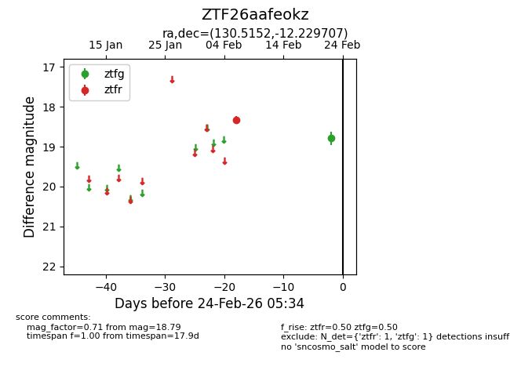
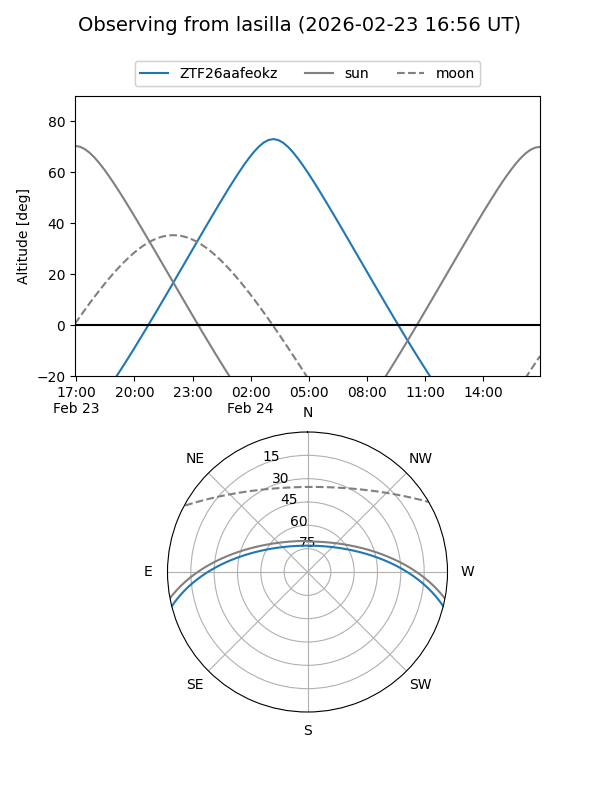
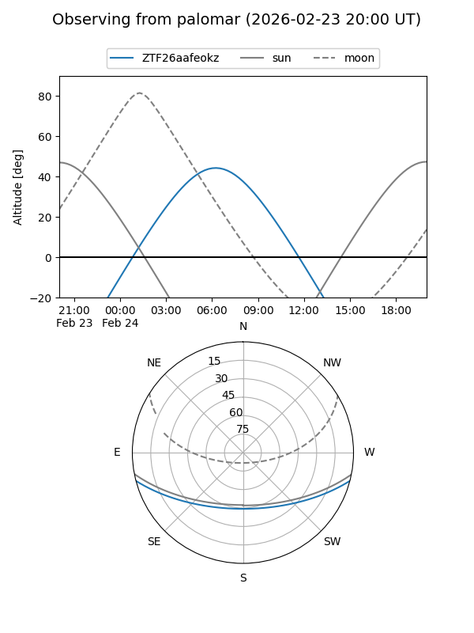

ZTF26aafeokz
Target ZTF26aafeokz at 2026-02-24 09:08
Aliases and brokers:
FINK: link
Lasair: link
ALeRCE: link
alt names
ZTF26aafeokz (ztf,fink_ztf)
Coordinates:
equatorial (ra, dec) = 130.5152,-12.22971
equatorial (HMS+DMS) = 08:42:03.64,-12:13:46.95
galactic (l, b) = (237.4797,+17.88622)
Flags:
Photometry:
last ztfg=18.79, ztfr=18.33
1 ztfg, 1 ztfr detections
Lightcurve

Visibility


Additional plots